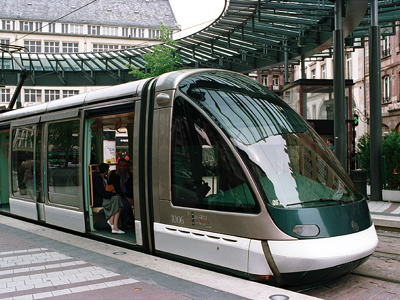

The wrong kind of snow
... just got back from job interviews in France, but not without a Wesley Willis style nerve shattering hell ride home.
Breaking the golden rule of public transport - never attempt to make more than one connection between different modes of transport in a single day - I miraculously made it back to Jyvaskyla the same day as starting out from Strasbourg (Ilkirch). It was snowing when I went to bed the previous night, but I figured it wouldn’t get deep enough to hamper the public transport system of a major european centre such as Strasbourg. I was very, very wrong. I woke up that morning, popped in my contact lenses, and peered out of the window of the guest house I was staying at. Oh dear. A good six inches or more of the white stuff, which had so spectacularly failed to show up back in Finland, had scattered itself liberally over the EU’s home. “But, panic not!” I though to myself. I had set the alarm nice and early, and I had ages of spare time to get the tram to the train station, for my 0755 TGV to gay Paris. However, As I crossed the car park adorned with rucksack, computer bag, coat, hat and gloves, through the sub zero Alsatian dawn, I quickly realised I was in for a bit of a shocker. Very few of the roads or foot paths had been cleared yet, meaning I had to trudge along the tyre tracks of the early bird vehicles on the road itself, and jump into the deeper stuff every time another car passed. Navigating the large roundabout was particularly treacherous. Some french bloke stopped his van, and I thought I was in luck, with the offer of a lift forthcoming. Sadly not; he was merely lost. I explained, in my best french, that I was unable to assist him in locating the building he was looking for, since I was english and had little idea where I was either. Rather later than scheduled, I made it to the tram stop, only to discover the tram tracks all too conspicuous by their absence from view. Clearly the tram was not running this far, if at all. Unperturbed (Ok the, a little bit), I looked around to find the appropriate bus stop, in amongst the equally confused and similarly late locals. After what seemed like an eternity, a bus did show up. Result! Perhaps there was still a chance I would make it to the train on time. Perhaps not. The traffic was terrible, a function of the snow multiplied by the non functioning tram. The slow moving bus quickly became rammed to the skylights with commuters that should have been on the pristine and punctual tram pictured above.
The air became a little warm and stuffy, and as we crawled along through the slush, I started to get that old familiar “traveling too early in the morning before my body is ready for it, cant sit in a comfortable position, air too warm” queasy feeling. Luckily, as we were stopped at some traffic lights, some french geezer, digging a car out of the snow ploughed wall of brown ice which had entombed his car on the side of the busy road, was drenched in a magnificent spray of slush as a car rapidly passed him with little consideration for his dryness. This caused a gallic temper eruption of very fine quality, with top class arm waving and expletives I could hear from inside the packed bus. All thoughts of travel sickness left my consciousness as he proceeded to get the oncoming traffic of that main thoroughfare to slow down to a crawl, such that he could excavate his motorised baking tin / rollerskate of a Peugeot from its icy grave without further insult to his dignity or trousers.
My constitution much fortified by that amusing event, I descended from the bus at Strasbourg train station without redecorating the attire of the girl sitting next to me with pavement pizza. That accomplished, I made a bee line for the ticket office, in the hope that my train was delayed at least as much as I was (1:30 min by this point) such that I might actually catch it. Sure enough, my train had already departed, leaving me with my back up plan. The next train, if it left on time, should just get me to Paris with enough time to take the RER B train to Charles de Gaulle airport, and make the check in of my flight to Helsinki. So, ticket purchased, I sat in the cold concourse, waiting for the platform info to come up on the screen. Ominously, most of the other trains appeared to be running late, and inevitably, before long the screen flashed up that the TVG to Paris would indeed be late. There went my chances of making my flight checkin. After consulting my glamorous assistant Suzie, who I suspected might be close to a french phone and a computer, I discovered there was a later flight that I should make easily, and also a later connection to Jyvaskyla from Helsinki. All was not lost!
Now carrying a sense of “whatever happens, happens” and ready to just cheerfully suck up the next string of cock ups in my journey, after some confusion with inadequate signage, I located the correct platform for the TGV, and awaited its delayed arrival. When it showed up, I realised that my seat reservation was right at the back of the train, which had stopped way out of the other end of the roofed part of the platform, into the uncovered part, which was obviously knee deep in snow. No effort had been made to clear it. “Zis vud never happen in Finland!” in thought. Myself and several others did our best Scott of the Arctic impressions for the 30 m along the platform to the doors, and waited for the fully automatic miracles of modern pneumatics to open. Then we waited some more. After a bit, a bloke in a funny hat and garish uniform, carrying a walkie-talkie showed up, and did bugger all for a while next to the offending door. We waited. An older gentleman was starting to look a rather hypothermic, and his relatives began to look a little worried, as it wasn’t getting us any warmer standing out there in a snowdrift. None of the doors on the back half of the train would open, so all the passengers with seats there were still on the platform. Eventually the SNCF gave up, and told us all to go get on the front half of the train. My mind’s eye filled with scenes of crowded carriage carnage, a la British Rail or
India, with piles of suitcases blocking all emergency exits, live chickens escaping from bin liners, and all manner of other third world railway chaos. However, I was pleasantly surprised to find a free seat and that everyone else seemed to be similarly accommodated. Thus, we departed, even later than the expected delayed time, due to the “doors with bad attitude” situation.
Suzie had phoned Finnair in Paris, so at least they knew I wasn’t going to make my “economy” class flight (which cost, cough!, 900 euros... yes, thats was 900 euros). Maybe they might be nice to me and put me on the later flight? We arrived in Paris Gare d’Est, alighted, and were handed envelopes/forms with which to make our late train compensation claims. So, now I was faced with a dilemma... Join the queue to get the letter saying how late the train was from the Chef du Station or whatever he’s called, and risk further delays due to the infamous French bureaucracy, or just head straight for the RER B train to the airport. I plumped for the latter, since the ticket only cost 50 euro (pretty cheap for a ticket bought that day, compared to England I think you’ll agree). Entering the Metro station I joined a short disorganised queue to buy a ticket from a real human. The lady who served me pretended she didn’t understand “airport” but when I said it in a French accent, she seemed to get the drift, and sold me a 8 euro ticket to get me to Charles de Gaulle. She managed to do this with a very French air of disinterest and nonchalance, but without being the slightest bit rude or unhelpful. I thought that was a pretty neat trick, and one that I’m sure the average yank could never master. The not too grubby metro then RER B trains whisked me efficiently to the airport in no time at all, but alas very late for my flight. My only chance was a positive outcome at the Finnair sales desk.
Well, I say Finnair, but being in the one world group, the Finnair office in the terminal was operated by swissport or something, offering services from Iberia, BA and Finnair amongst others. No chance of speaking to a Finn then; not good news since the Finns are usually scared into being very nice to us Brits due to their fear of speaking English incorrectly. A very odd kind of mentality that, especially since they tend to speak better English than most chavs. At the desk I was greeted by a typically gallic shrugsome lady, and a rather more upbeat (probably new and still keen) lady with long dreds. Not a disaster... I figured use of my polite english gentleman routine might get me on the next flight.
Well, it did get me on the next plane, but not after they had politely but firmly pointed out to me that my ticket was not transferrable, as stated clearly on the printout I had. As a result they would have to charge me the entirely arbitrary fee of 150 euro to change my reservation to the last plane. I politely protested that despite the ticket being an “economy” class one, it had actually cost my a tad over 900 euros. That didn’t cut much mustard. I considered making a more assertive plea, but realised that would likely lead to their retreat to the other end of the office away from the small hole in the glass window we were conversing through, with much tutting, boffing, sucking of teeth, and other gallic mannerisms conveying that the negotiation and come to an unsatisfactory end. I agreed to pay up, thinking that my travel insurance should pick up the extra charge, since I was delayed several times through no fault of my own. No such luck. Back in Finland the nice lady in the Pohjola office informed me that I was only covered for delays on public transport when catching a flight leaving Finland, and not for the journey coming back home. Odd, I know, but I have since read the offending clause, and it is indeed true. Weird.
Next, the nicer swissport lady informed me that we still had one slight problem to deal with. The Paris-Hel flight was delayed, which came as little surprise considering the day I was having. That meant if I missed my connecting flight to Jyvaskyla, I would be stranded in Hel for the night, since the trains north would no longer be running. She suggested that I could stay in Paris overnight, then get the first flight in the morning, and then there would be connecting flights home when I got to Hel. She even thought this was a good idea. Perhaps there was some hidden motive for that suggestion? Can’t think why it would be better to be stranded in Paris instead of closer to home in Helsinki though...? I gently pushed for her to just put me on the last flight to Finland, and let me take my chances at Helsinki Vanta airport... maybe I’d be lucky, and the connection would also be delayed? She agreed to my wishes, and duly printed me off a new reservation, which caused some confusion later at the checkin. She explained that she had booked me on the last flight from Hel to Jyvaskyla, and also made a “just in case” reservation for the first one in the morning, in the very likely event that I missed the last one tonight. I thought that seemed rather sensible, and thanked her for her help, then was on my way to grab a buttie and a beer. A very surly banknote snatching, eye contact avoiding, shrugsome sandwich lady later, I was in the bar enjoying a very well earned belgian beer. I was lifted by the mostly positive (apart from the fiscal aspect) experience at the Finnair/swissport counter, and with surprisingly good cheer realised that it all could have gone horribly, horribly wrong. At least I was pretty likely to make it to Finland that night. Maybe not home, but then sometimes you can’t have your cake and eat it. Could have been worse.
At the checkin, there was a little confusion about the double booking for the flight from Hel to Jyvaskyla, but with that quickly resolved, the nice gentleman realised I had a quick turnaround to catch said connection. He produced one of those tags that says “rush” or “quick transfer” or “please, please, try to get this bag on the Jyäskylä flight. I know its at the other terminal in Helsinki, but its not a massive airport, and really isn’t very far. Go on, you know you can do it if you try!” I informed him that even when the flights are not delayed, anything less than two hours between the incoming and outgoing flights in Helsinki means the bag will never make it on the plane, rendering his brightly coloured tag a waste of time in this case. He put it on the bag anyway, and indeed it didn’t help at all. I went on to tell him that my bags never make it onto the connecting flight in Hel, and they always have to bring it in the morning off the next flight. He seemed surprised to hear this fact, but then I reassured him by telling him that everything else in Finland works without error, and if they had Finns running Strasbourg, all the snow would have been cleared, my tram would have been running, and the polar expedition at the train station would not have happened.
In due course, the delayed flight took off, happily with me on it, and after some dodgy food and a chat with a big bloke from Dubai in the legroom-tastic exit seats we had, we landed. The trolley dolly (OK, sorry, civil aviation sales attendant) tried to lift my mood by suggesting I might still make my connection, but I was already resigned to missing it. The big bloke from Dubai, who looked like he should play rugby (which I obviously suggested he should), wished me good luck, and alighted down the ramp to greet the Finnair bloke waiting to help people in the terminal. To my great surprise he told me the plane was boarding at gate 14, just a hop, skip and a jump away. Sprint White! Sprint! I covered the 200 or so meters to gate 14 with considerable less speed than I had on the athletics track while I was still playing rugby, but I made it onto the plane to Jyvaskyla with a couple of minutes to spare, albeit with my bronchi attempting a break out from the confines of my chest, and a feeling not unlike acute asthma. Bingo! I am home and dry!
Well, I suppose I was, but that wasn’t the end of the hell ride. I landed at Jyvaskyla, well Tikkakoski airstrip, 20 min away from home. After failing to reclaim my absent baggage, which yet again had failed to make the connection, I joined the queue to inform the Finnair lady of the colour of my bag, and where to bring it when it showed up. After dealing with that inevitability, I was faced with the final short leg home to my front door. No Finnair bus anymore... so, taxi it is then. After failing to blag my way onto a full mini bus going to one of the hotels in town, I managed to get a ride from a taxi whose fair had not shown up. Great! No need to wait for another one. Soon I was home safe and sound, if bagless, toothbrushless, razorless, etc. Phew!
Arising refreshed and in a good mood about how well the trip to france went, and how I had narrowly averted disaster on the way home, I gazed out over the balcony into the carpark out back of the flat, so see how much snow was on the car. Hmmm.....? No car visible... where was the car? At work? No. Didn’t get a lift to the airport from work, so it can’t be there.... Oh.... aaaaahhhh, yes. I drove to the airport didn’t I. Nice work White.
Then the doorbell rang, signaling the tardy, but very polite delivery of my rucksack...
... by the way, when I did go and get the car, there was a nice layer of snow on it, and it was about -15oC. This means snowboarding is now on, and I’ve been twice this weekend. Finally it looks like bringing my board back from France wasn’t a waste of time after all!

Below, the wrong kind of snow not covering the Strasbourg tram, unlike it was the other day, leading to a nerve shattering hell journey (that turned out OK in the end).
Sunday 28 January 2007
